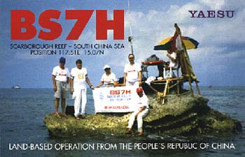

1997 BS7H index

BS7H 1997 Home Page
|
DXCCのウオンテット・カントリー第2位に上げられている、スカボロー・リーフからの第3回目の運用スケジュール
が発表されました。 中国が領有権を主張しているこのスカボロー・リーフからの運用は過去2回、1994年6月と1995年4月に行われています。 しかし、海洋に点在するReefからの運用という条件の悪さから、運用された時間は100時間にも満たないものです。 このため、P5（北朝鮮）に次ぐ “珍カントリー”として、その運用が待たれていました。 2月16日付けで発表された「1997 BS7H DXpedi」の要旨は次の通り。  第２回(1995年4月)BS7H DX Pedition BS7H 1997 DXpedition to Huang Yan Dao (Scarborough Reef)16 February,1997CRSA(The Chinese Radio Sports Association)は、本日、南シナ海に位置するHuang Yan Dao(スカボ ロー）への3回目のDXペディションの計画をアナウンスした。BZ1OKおよびJA1BKをはじめとする複数国からなるDXペディションチームは、4月28日にGuangzhou(広州)を出航し、 4月30日（水）からBS7Hのコールサインで運用する。 このオペレーションの主眼は、出来るだけ多くのDXerと、少なくとも1回のQSOをすることにある。 このため、オペレーターたちは、世界中のあらゆる地域のDXerに、BS7HとQSO出来る最善のチャンスを与えるべく、 最も伝搬経路上、困難を伴う地域（例えば、米国の東海岸）とのQSOに注力するであろう。 このオペレーションの第2の目的は、同時に4局がオンエアーし、160mから6m、CW、SSB、サテライト及びRTTYを含む、 多くのバンド及びモードでQSOすることにある。 BS7H 1997 DX Pediのオペレーターは、BZ1OK、JA1BK（QSLマネジャーをつとめることになろう）、 JA1RJU、N7NG、W6EU(ex-WA6AUE)及びW6RGGである。 最終的なオペレーティング・チームは、決定次第、運用周波数のリストとともにアナウンスされる。 BS7H 1997 DXpedi のサポートチームがオペレートチームと綿密な連絡を取りながらこのPediのバックアップを行う。 (略） 今回のPediには、Yaesu、Cushcraft、NCDXF（Northern California DX foundation）、INDEXA(Intern- ational DX Association)らがスポンサーとなって協力する。 Yaesuは5台のHF機とAMPを供給する。 Cushcraftからは5本のHFのアンテナが提供される。 (略) 今後の1997 BS7H DXpediに関する情報は「1997 BS7H Home Page」から流される。 (http://www.iglou.com/n4gn/sr/)。 追加の情報は、Tim Totten N4GN（ex KJ4VH）に e-mail（n4gn@iglou.com）又は FAX（+1-502-239-7766）で。 【英語・原文】16 February, 1997The Chinese Radio Sports Association (CRSA) has today announced plans for the third DXpedition to Huang Yan Dao, located in the South China Sea.A multinational team, led by BA1OK and JA1BK, will set sail from the southern Chinese port city of Guangzhou (a.k.a. Canton) on 28 April, and is expected to commence the one-week operation from Huang Yan Dao on Wednesday, 30 April, using the call sign BS7H. The primary goal of this operation is to provide at least one QSO with as many individual DXers as possible. For this reason, the operators will concentrate on those regions having the most difficult propagation paths(e.g., the eastern half of the U.S.), giving DXers in every corner of the globe the best possible chance to make it in the log. A secondary goal will be to provide QSOs on additional bands and modes,including 160 through 6 meters, CW, SSB, satellite and RTTY, with as many as four stations simultaneously on the air. Operators for BS7H 1997 include BA1OK, JA1BK (who will also serve as QSL manager), JA1RJU, N7NG,W6EU (ex-WA6AUE) and W6RGG. The complete operating team, as well as the list of transmit frequencies, will be announced once they have been finalized. BS7H 1997 will also employ an 'operations support network' consisting of several stations throughout the world which will be in constant communication with the operating team from the time of their departure until their safe return. This will allow the world-wide DX community an opportunity to follow the progress of this international project and provide feedback to the operating team in near real time. Thanks to the CRSA's tireless efforts to promote Amateur Radio with in the People's Republic of China and to develop relationships with key agencies, this DXpedition enjoys strong support from the PRC government. In particular, the DXpedition team wishes to recognize the assistance of the Ocean Bureau and Sports Commission. (The Sports Commission is a ministry-level organization responsible for regulating Amateur Radio in the PRC.) Finally, a very special thanks is due to the early sponsors of BS7H 1997 --Yaesu, Cushcraft,the Northern California DX Foundation(NCDXF) and the International DX Association (INDEXA). Yaesu has provided five transceivers and an amplifier. Five HF antennas have been supplied by Cushcraft. NCDXF and INDEXA have each contributed significant financial support to this operation. Individual contributions to BS7H 1997 will be gratefully accepted at the conclusion of the operation. Further details will be announced on the DX reflector and the BS7H 1997 Home Page (http://www.iglou.com/n4gn/sr/） as they become available. For additional information, please contact Tim Totten,N4GN (ex-KJ4VH), at e-mail n4gn@iglou.com or fax +1-502-239-7766. 【補足情報】（JA1BK、JA1RJU） 使用する船は、中国のオーシャンビューロー所属の灯台などの補修船（1000t）。
参加メンバー
日本から JA1BK、JA1RJU
米国から N7NG、W6EU、W6RGG
中国から BA1OK、BA1DU、BA4RC、BD4RX、BD7JG、BG7KW
QSLはJA1BKが取り扱う。 3回目の運用と共に、1995年の2回目運用時のQSLの扱いは終了する。厳しい環境での運用となるので、天候次第で夜間のQRVは無い場合も考えられる。 JA局は先のPediで、ほとんどQSOを済ませていると思われるので、北米とヨーロッパに開いている時には絶対 にコールしないよう配慮する。 今回は14.21.28MHzに3EL トライバンダー使用。 他にR7000、“JA1BKスペシャル”、75m＋160mインバッテットVなどを使用。 160mからサテライト（予定）までのQRVを計画。 初のRTTY運用も行う。6mの運用は100W(FT-920)に4ELの予定。 今後の情報は「N4GNのHome Page」内にある「1997 BS7H Home Page」で随時発表される。 6mに関する要望、問い合せは、「JA1RJU Home Page」(http://www.big.or.jp/~ja1rju/) まで。
【JA1RJU 小笠原 一夫】
|